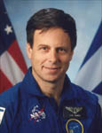

Lyndon B. Johnson Space Center
Houston, Texas 77058
|
National Aeronautics and Space Administration Lyndon B. Johnson Space Center Houston, Texas 77058 |
 |
Biographical Data |
||
ILAN RAMON (COLONEL, ISRAEL AIR FORCE)
PAYLOAD SPECIALIST
PERSONAL DATA: Born June 20,1954 in Tel Aviv, Israel. Died on February 1, 2003 over the southern United States when Space Shuttle Columbia and the crew perished during entry, 16 minutes prior to scheduled landing. He is survived by his wife Rona and their four children. He enjoyed snow skiing, squash.
EDUCATION: Graduated from High School in 1972; bachelor of science degree in electronics and computer engineering from the University of Tel Aviv, Israel, in 1987.
AWARDS: Posthumously awarded the Congressional Space Medal of Honor, the NASA Space Flight Medal, and the Distinguished Public Service Medal.
SPECIAL HONORS: Yom Kippur War (1973); Operation Peace for Galilee (1982); F-16 1,000 Flight Hours (1992).
EXPERIENCE: In 1974, Ramon graduated as a fighter pilot from the Israel Air Force (IAF) Flight School. From 1974-1976 he participated in A-4 Basic Training and Operations. 1976-1980 was spent in Mirage III-C training and operations. In 1980, as one of the IAF’s establishment team of the first F-16 Squadron in Israel, he attended the F-16 Training Course at Hill Air Force Base, Utah. From 1981-1983, he served as the Deputy Squadron Commander B, F-16 Squadron. From 1983-1987, he attended the University of Tel Aviv. From 1988-1990, he served as Deputy Squadron Commander A, F-4 Phantom Squadron. During 1990, he attended the Squadron Commanders Course. From 1990-1992, he served as Squadron Commander, F-16 Squadron. From 1992-1994, he was Head of the Aircraft Branch in the Operations Requirement Department. In 1994, he was promoted to the rank of Colonel and assigned as Head of the Department of Operational Requirement for Weapon Development and Acquisition. He stayed at this post until 1998./
Colonel Ramon accumulated over 3,000 flight hours on the A-4, Mirage III-C, and F-4, and over 1,000 flight hours on the F-16.
NASA EXPERIENCE: In 1997, Colonel Ramon was selected as a Payload Specialist. He was designated to train as prime for a Space Shuttle mission with a payload that included a multispectral camera for recording desert aerosol. In July 1998, he reported for training at the Johnson Space Center, Houston, where he trained until 2003. He flew aboard STS-107, logging 15 days, 22 hours and 20 minutes in space.
SPACE FLIGHT EXPERIENCE: STS-107 Columbia (January 16 to February 1, 2003). The 16-day flight was a dedicated science and research mission. Working 24 hours a day, in two alternating shifts, the crew successfully conducted approximately 80 experiments. The STS-107 mission ended abruptly on February 1, 2003 when Space Shuttle Columbia and the crew perished during entry, 16 minutes before scheduled landing.
MAY 2004
{kind=link}